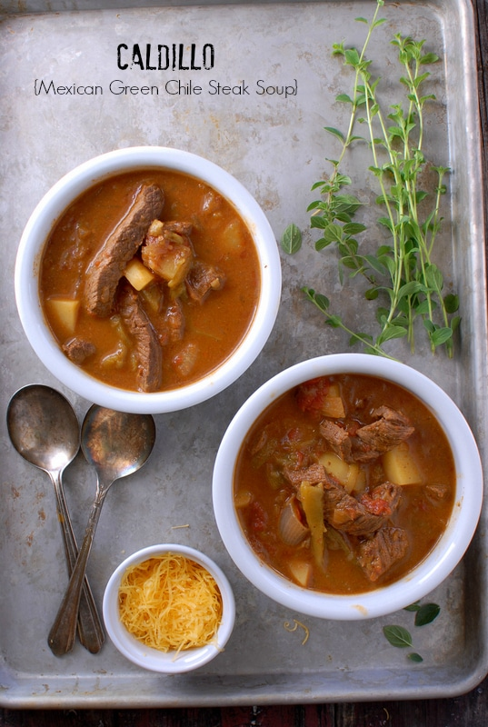

Caldilo

This is a highly nutritious and wonderful mexican soup called a 'Caldilo'.It's too dense to be as soup
and is almost a stew except the liquid hasnt been thickened.The flavors are deep and rich.
Ingredients
- vegetable oil for browning
- 1 pound beef round, thinly sliced then cut into 1 inch pieces
- 1 pound beef round, thinly sliced then cut into 1 inch pieces
- 6 roma (plum) tomatoes, chopped
- 4 new potatoes, quartered
- 2 cups tomato puree
- 1 bunch fresh spinach, rinsed and torn into bite-size pieces
- ½ cup red wine
- 3 cloves garlic, minced
- 2 tablespoons chopped fresh oregano
- 1 (14.5 ounce) can beef broth
Directions
-
Heat oil in a medium skillet over medium-high heat.
- Cook and stir meat until well browned on all sides,
then transfer to a large stock pot.
- Cook and stir onions in the same skillet in the fat remaining from the meat.
- lightly browned and tender, stir in tomatoes. Continue cooking until some of the tomato liquid has evaporated,
then transfer to the stock pot with the meat.
-
In a separate skillet, brown the potatoes in a small amount of oil over medium-high heat, turning occasionally.
- Add the potatoes to the meat, along with the tomato puree, spinach, red wine, garlic, and oregano.
- Add just enough beef broth or water to cover meat and vegetables, and bring to a boil.
- heat to a simmer, cover, and cook for one hour.